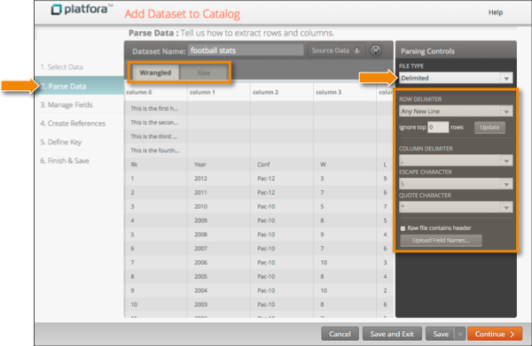

| Define Datasets / Parse Source Data into Rows and Columns | |
A delimited file is a plain text file format for describing tabular data. It refers to any file that is plain text (typically ASCII or Unicode characters), has one record per line, has records divided into fields, and has the same sequence of fields for every record.
Delimited records (or rows) are separated by line breaks, and fields (or columns) within a line are separated by a special character called the delimiter (usually a comma or tab character). If the delimiter also appears in the field values, it must be escaped. The Platfora delimited parser supports single character escapes (such as a backslash), as well as enclosing field values in double quotes (as is common with CSV files).
On the Parse Data step of the dataset workspace, set the Parsing Controls as follows:
| Parser Control | Description |
|---|---|
| File Type | Choose the Delimited parser for delimited text and CSV files. The Wrangled view shows the data with the parsing logic applied. |
| Row Delimiter |
Specifies a single character used to separate rows (or records) in your source data files. In most delimited files, rows are separated by a new line, such as the line feed character, carriage return character, or carriage return plus line feed. Line feed is the standard new line representation on UNIX-like operating systems. Other operating systems (such as Windows) may use carriage return individually, or carriage return plus line feed. Selecting Any New Line will recognize any of these representations of a new line as the row delimiter. |
| Ignore Top Rows |
Specifies the number of lines at the beginning of the file to ignore when reading the source file during data ingest and lens builds. Enter the number of lines to ignore and click Update. To use this with the Raw Files Contains Header option, ensure that the line containing the column names is visible and is the first remaining line. |
| Column Delimiter | Specifies the single character used to separate the columns (or fields) of a row in your source data files. Comma and tab are the most commonly used column delimiters. |
| Escape Character |
Specifies the single character used to escape delimiter characters that occur within your data values. If your data values contain delimiter characters, those characters must be escaped, otherwise the parser will assume the special character denotes a new row or column. For comma-separated values (CSV) files, it is common practice to escape delimiters by enclosing the entire field value within double quotes. If your source data uses this convention, then you should specify a Quote Character instead of an Escape Character. |
| Quote Character |
The quote character is used to enclose individual data values in CSV-formatted files. The quote character is usually the double quote character ("). If a data value contains a delimiter, then enclosing the value in double quotes treats every character within the quotes as data, including the delimiters. If the data also contains the quote character, the quote character can also be used to escape itself. For example, suppose you have a row with these three data values: weekly special wine, beer, and soda "2 for 1" or 9.99 each If the column delimiter is a comma, and the quote character
is a double quote, a correctly formatted row in the source
data would look like this:
"weekly special","wine, beer, and soda","""2 for 1"" or 9.99 each" |
| Raw File Contains Header |
A header is a special row containing column names at the beginning of a data source file. If your source data files have a header row as the first line in the file, select this check-box. This will treat the first line in each source file as a header row instead of as a row of data. |
| Upload Field Names |
Allows you to upload a comma or tab delimited text file containing the field information you want to set. When a dataset has a lot of fields to manage, it may be easier to update several field names, descriptions, data types, and visibility settings all at once rather than editing each field one-by-one. For more information, see Edit Multiple Fields at Once. |